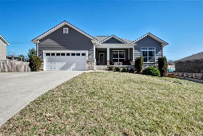
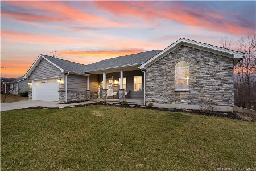
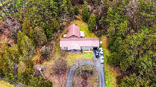
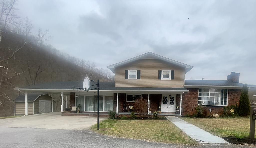
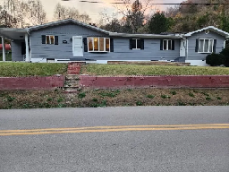
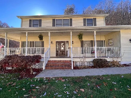

$399,900
1004 Catalpa Drive , Georgetown, IN 47122
(Floyd County)
Beautiful 4 bedroom, 3 bath, walk out finsihed basement with a fenced in backyard. Open floor plan with a stunning kitchen with island, granite counter tops, stainless appliances and in eat dinning area. Master bed with trail ceiling and master bath with tile floor and tile shower, soaker tub. Basement is a walk out with patio area, enough room for that game room and plumbed for a wet bar to add that mini kitchen later. Extra storage in the basement as well. Huge cedar fenced in backyard along with a covered back deck off the kitchen; great spot for the morning coffee. Also the driveway has an extra parking pad.

Location
1004 Catalpa Dr, Georgetown, IN
Contact Seller
Rob Gaines
Keller Williams Realty Consultants
Jeffersonville, IN
(812) 944-7024
$469,500
9049 Voyles Road , Pekin, IN 47165
(Floyd County)
A stunning home in a highly sought after area. You will appreciate all the detail that went into constructing this breathtaking custom-built home, erected in 2019. Pull into the oversized driveway, attached 2 car garage & instantly fall in love. Covered front porch accented with stone pillars, high-end thicker siding complemented with grey & silver stones. Located on a partially wooded lot of 1.198 acres. 2621 sq ft. finished living space. 4 Bedrooms & 3 full bathrooms . Walk through the front door in awe of the Great Room, vaulted ceiling showcasing the openness to the dining area along with a dream kitchen & extra seating around the island. Oversized pantry, modern high-end quartz counter-tops & slow-close cabinets, tile backsplash, stainless steel appliance & a deep stainless-steel sink. Double Pane UV reflective windows.

Location
9049 Voyles Road , Pekin, IN 47165
Contact Seller
Becky Higgins
RE/MAX Advantage
Floyds Knobs, IN
(812) 923-7050
$315,000
7665 US HWY 23 , Ivel, KY 41642
(Floyd County)
Introducing a true Eastern KY real estate gem! This spacious 3556 sq ft home boasts 3 large bedrooms, each featuring its own en-suite bath for ultimate convenience. Also included with this spacious abode is THREE living rooms plus a large loft perfect for an additional den or office. Nestled on a private 2 acre lot, this home offers tranquility plus seclusion while still providing easy access to US 23 for a hassle free commute to Pikeville or Pburg! Recent renovations inside and out this home is a true masterpiece with its modern meets rustic charm.

Location
7665 US HWY 23 , Ivel, KY 41642
Contact Seller
Brianna Corum
Valley Agency, Inc.
MLS# 121568
(606) 478-7100
$299,000
100 Lawson St , Prestonsburg, KY 41653
(Floyd County)
An Absolutely beautiful home conveniently located in Prestonsburg. This home is a nature lovers dream located on the River bank to enjoy fishing, canoeing, campfires. Large level yard and attached carport with concrete drive, fenced backyard. Featuring an open concept floor plan perfect for entertaining or just relaxing.

Location
100 Lawson St , Prestonsburg, KY 41653
Contact Seller
Janice Kidd
Re/Max Freedom
(606) 506-4179
$410,000
5935 Rt. 2030 , Banner, KY 41603
(Floyd County)
Beautiful 3 to 4 bedroom, 3 bath home with attached Mother in law suite. Home features completely remodeled kitchen with new appliances, new flooring throughout, new HVAC, and a gas fireplace to cozy up to on cold winter nights. All situated on approx. 39.5 acres of beautiful hillside property. Also included are 3 rental properties all occupied. Property is a must see.

Location
5935 Rt. 2030 , Banner, KY 41603
Contact Seller
Laura Leighann Lafferty
Century 21 American Way Realty
Prestonsburg, KY
(606) 886-9100
$335,000
17 Cedar Trace , Prestonsburg, KY 41653
(Floyd County)
4 bedroom/3 bath home on corner lot in the desirable Cedar Trace subdivision. This beautiful home has a first-floor bedroom, fireplace, large living room, and spacious kitchen. Outside you can sit and relax on the screened portion of the wrap around porch. Conveniently located just minutes from town/shopping.

Location
17 Cedar Trace , Prestonsburg, KY 41653
Contact Seller
Rachael Nicole Johnson
Century 21 American Way Realty
Prestonsburg, KY
(606) 886-9100